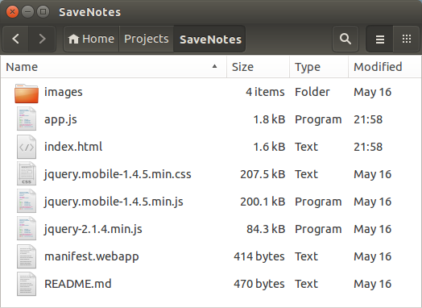

6. Enabling Storage¶
Welcome to Episode 6 of the Firefox OS App Development Tutorial. This episode will take you through the steps for writing Firefox OS Apps that add persistence capability to your application. What this means is that you can use a local database of sorts to save your data and the data will be available not just across the application but also across application restarts.
6.1. Prerequisites¶
- You have setup your machine with the Firefox OS simulator. If not you can check out Overview and Development Setup, which takes you through the entire setup.
- You have installed the zipcodeapp that we covered in Hello World. This tutorial uses that as an example, but if you have any other application installed in the Firefox WebIDE, then you should be able to follow along.
6.2. What this Episode covers¶
- What is the HTML5 LocalStorage API.
- Sample Firefox OS Application that covers using HTML5 LocalStorage API.
6.3. Episode 6 in Action¶
Let us check out the application in action first. This will help you understand what we shall be achieving by the end of this episode.
What we shall write is a mobile application that will allow us to save some quick notes. Each note will have a title and some details. These notes will be saved in the Local Storage of the device and then we can view all our notes too.
All right then, the first screen of the mobile app is shown below:

When we click on the Add a Note button, we get a screen as shown below where we can enter the title and details for the new note. Once we are done, we can save the note by clicking on the Save Note button.

If the note is successfully saved, it will display a message as shown below:

To view all the notes, you need to click on the View Notes button from the main screen. This will retrieve all the notes from the Local Storage and display them to you in a collapsible list form.

You can click on any of the + signs and it will expand to show you the note details as shown below:

If you wish to delete all the notes, there is also a Clear button. This will delete permanently all the notes from the Local Storage.
Let’s get going with the code. Note that the example screenshots are from the Firefox OS simulator running locally. So you can use your Firefox OS Simulator to run all the examples.
6.4. Download Full Source Code – Episode 6¶
I suggest that you begin with a full download of the project source code. Since the project depends on libraries like jQuery and jQuery Mobile, it will save you the hassle of downloading the dependent libraries.
Go ahead & download the code from: https://github.com/anicholakos/SaveNotes
Extract all the code in some directory. You should see a directory structure inside of SaveNotes that looks something like this:
{kind=link}
6.5. HTML5 Storage APIs¶
The HTML5 Storage API is a JavaScript API that will allow your application to store data and retain that data even across browser restarts.
As a first step to make web applications work offline, we need a storage API that allows the application to store application specific data and use it as needed. Here are some examples of how you could use storage:
- Games: You need to store the current moves in an application, so that if the user were to come back later to the application, it would replay back the moves. This also allows applications to store a user’s highscores in a game.
- Business Apps: How about saving information locally? For example, taking offline orders, writing notes locally, and looking them up later.
You will easily be able to think of more use cases.
The Storage API also known as the Local Storage API provides a key based storage with a simple API to go along with it. The amount of storage size allocated per domain is anywhere from 5MB-10MB, which should be sufficient for most applications. There is also another API available for storage (IndexedDB), which provides a more sophisticated database like structure a la SQL, but we shall keep the discussion limited now to simple storage support in the form of key-based values.
Few things to do about the Storage API:
The Local Storage Object that is provided to you is available under window.localStorage, but for all purposes, you can use as localStorage. All the methods for saving, removing, etc will be invoked in a format that looks like localStorage.<some-method>.
There are just 6 methods that you need to be familiar with to understand the localStorage API. If you have worked with maps or key-value data structures before in any language, it should be familiar.
- The methods are:
- getItem(<key>): Returns back the value for the key.
- setItem(<key>,<value>): Sets a value (Creates or overwrites) for a key.
- removeItem(<key>): Deletes the entry for that particular key.
- clear(): Removes all the entries in the Local Storage.
- length: Returns a count of the number of keys in the local storage.
- key(<index>): returns the value for a key as per the index. The index ranges from 0 to (length-1).
6.6. SaveNotes Application¶
OK. Let’s get going with understand the code and how the Local Storage API has been used to persist (save) notes in our application.
6.7. SaveNotes Application - manifest.webapp¶
The first thing we should discuss is the manifest file. This should be familiar now and it has the standard attributes like name and version. There is nothing special happening here.
1 2 3 4 5 6 7 8 9 10 11 12 13 14 15 | {
"version":"2.0",
"name": "Notes",
"description": "Uses the HTML5 Storage API to demonstrate how to save data in your Firefox OS Apps.",
"launch_path": "/index.html",
"icons": {
"128": "/images/notes_128.png",
"512": "/images/notes_512.png"
},
"developer": {
"name": "Romin Irani",
"url": "http://www.rominirani.com"
},
"default_locale": "en"
}
|
6.8. SaveNotes Application - index.html¶
Next up is the index.html page and it is a simple jQuery Mobile page.
1 2 3 4 5 6 7 8 9 10 11 12 13 14 15 16 17 18 19 20 21 22 23 24 25 26 27 28 29 30 31 32 33 34 35 36 37 38 39 40 41 42 43 44 45 46 47 48 49 50 51 52 53 54 55 56 57 58 59 60 61 62 | <!DOCTYPE html>
<html>
<head>
<meta charset="utf-8">
<meta name="viewport" content="width=device-width, initial-scale=1">
<title>Notes</title>
<link rel="stylesheet" href="jquery.mobile-1.4.5.min.css">
<script src="jquery-2.1.4.min.js"></script>
<script src="jquery.mobile-1.4.5.min.js"></script>
<script src="app.js"></script>
</head>
<body>
<!-- Start of first page: #home -->
<div data-role="page" id="home">
<div data-role="header" data-position="fixed">
<h3>Notes</h3>
</div><!-- /header -->
<div data-role="content">
<a href="#" id="btnAddNote" data-role="button">Add a Note</a>
<a href="#" id="btnViewNotes" data-role="button">View Notes</a>
</div><!-- /content -->
</div><!-- /page home -->
<!-- Start of the second page : #add-notes -->
<div data-role="page" id="add-notes">
<div data-role="header" data-add-back-btn="true">
<h1>Add a Note</h1>
</div>
<div data-role="content">
<input type="text" id="noteTitle" value="" placeholder="Title" autofocus>
<textarea placeholder="Details" name="noteDetails" id="noteDetails">
</textarea>
<a href="#" id="btnSaveNote" data-role="button">Save Note</a>
<a href="#" id="btnClearNotes" data-role="button">Clear</a>
</div>
</div><!-- /page add-notes -->
<!-- Start of the third page : #view-notes -->
<div data-role="page" id="view-notes">
<div data-role=header data-add-back-btn="true">
<h1>List of Notes</h1>
<a href="#" data-role="button" class="ui-btn-right"
id="clearAllNotesBtn">Clear</a>
</div>
<div id="note-list" data-role="content">
</div>
</div><!-- /page view-notes -->
</body>
</html>
|
Let us discuss the index.html page in detail now:
We have included the script in the app.js file on Line 11.
- There are 3 pages in the mobile application:
- home (Lines 17-28).
- add-notes (Lines 31-44).
- view-notes (Lines 47-59).
The #home page has two buttons for Add a Note and View Notes.
The #add-notes page has a form for entering the title (#noteTile), details (#noteDetails) and two buttons for saving the note (#btnSaveNote) and clearing the fields (#btnClearNotes).
The #view-notes page has a button in the header to clear all notes (#clearAllNotesBtn) and it has a div area (#note-list) to display all current notes, once we get them from the Local Storage.
6.9. SaveNotes Application - app.js¶
1 2 3 4 5 6 7 8 9 10 11 12 13 14 15 16 17 18 19 20 21 22 23 24 25 26 27 28 29 30 31 32 33 34 35 36 37 38 39 40 41 42 43 44 45 46 47 48 49 50 51 52 53 | $(document).ready(function() {
$("#btnAddNote").click(function() {
//Change to the add-notes
$.mobile.changePage($("#add-notes"));
});
$("#btnViewNotes").click(function() {
//Change to the add-notes
$.mobile.changePage($("#view-notes"));
//Empty the list first
$("#note-list").html("");
//Read the notes
for (i=0; i<=localStorage.length-1; i++) {
key = localStorage.key(i);
val = localStorage.getItem(key);
var noteElement = $("<div data-role='collapsible' data-mini='true'/>");
var h3NoteTitle = $("<h3/>").text(key);
var pNoteDetails = $("<p/>").text(val);
noteElement.append(h3NoteTitle);
noteElement.append(pNoteDetails);
$("#note-list").append(noteElement);
}
$('div[data-role=collapsible]').collapsible({refresh:true});
});
//Click Handlers for Add Notes page
$("#btnSaveNote").click(function() {
noteTitle = $("#noteTitle").val();
noteDetails = $("#noteDetails").val();
//alert(noteTitle + "," + noteDetails);
//Save it in local storage and stay there
if (window.localStorage) {
localStorage.setItem(noteTitle, noteDetails);
alert("Your note has been saved");
}
//Clear input areas for new note
$("#noteTitle").val("");
$("#noteDetails").val("");
});
$("#btnClearNotes").click(function() {
$("#noteTitle").val("");
$("#noteDetails").val("");
$("#noteTitle").focus();
});
//Click Handlers for View Notes page
$("#clearAllNotesBtn").click(function() {
localStorage.clear();
$("#note-list").html("");
alert("All notes have been cleared");
});
});
|
Let us discuss the source code in detail now since it contains the HTML5 LocalStorage JavaScript API:
Lines 2-5 indicate that when we click on the Add a Note button in the home page, it will navigate to the add-notes page. This is jQuery Mobile stuff.
Let us first focus on adding or saving the note, lines 27-39. Here you will notice that we first extract out the values that the user has entered for title and detail. Then on line 32 we check if the localStorage object is available i.e. if support for it is there. If yes, we simply invoke the localStorage.setItem(<key>, <value>) method. This will save the key-value in the local storage. Note that we are using the title of the note as the key. So if you enter the same title again but with different details, it will overwrite the value because the key is the same. So keep in mind, that the setItem method functions as both an Add and an Update. That is all there is to save the item. Note that we have saved a simple string value here, but you could put entire JSON Objects over here (Object, Array) and read back the values.
Now let us focus on lines 7-24. Lines 7-9 indicate that when we press the View Notes button on the home page, it will navigate to the view-notes page.
We clear the content i.e. any existing items that were present on the page by clearing the html content for #note-list on line 11.
Then we iterate through the localStorage keys one by one, retrieve the values and form the jQuery Mobile collapsible div for each note entry. Note that this loop (lines 13-22) makes use of 3 additional methods of localStorage:
- We first use the localStorage.length method to get the total number of items that are present.
- Next we get the key for each item via the localStorage.key(index) method.
- Finally, we use the localStorage.getItem(<key>) method to retrieve the details for the note.
For each note, we are simply creating a collapsible div for jQuery Mobile UI and appending it to the #note-list element.
6.10. Local Installation and Testing¶
This completes our discussion of writing Firefox OS applications that utilize the HTML5 LocalStorage API. Now comes the part of seeing it actually work. All we need to test out this application is:
- You should have installed the Firefox OS Simulator into the WebIDE.
- You should have downloaded/written the application as described above. We will assume that the index.html and manifest.webapp files are present in a directory named SaveNotes. You should navigate to your own directory structure when called to later.
6.11. Debugging Local Storage¶
If you recollect Episode 3 : Working with the OS Simulator, we had covered how to start the WebIDE and run an application in the FirefoxOS simulator and debug the execution.
You can debug the current state of the localStorage object in the same manner. To try that out, go to the WebIDE in your Firefox browser and start the SaveNotes application. Once connected to the running instance of the SaveNotes application, click the wrench and the console window will be visible.
{kind=link}
In the developer console, go ahead and type localStorage as shown above and hit Enter. This will show the current state of the localStorage object as shown below. For example, I had a few notes saved and hence you see that list. I suggest you give it a try by inspecting localStorage without any items, then add a few items and then inspect the value again. You will be able to see the list of items that you have added.
{kind=link}
You can even try out the different methods of the localStorage API. For example, in the screenshot below, I have tried out localStorage.length. That returns me a value of 2, since I have 2 notes saved. Similarly, I have also tried out localStorage.key(0) that returns me the value of the key at index 0.
{kind=link}
6.12. Next Steps¶
I encourage you to enhance the current application by giving the ability to delete individual notes. You could even opt for a more array-like representation of the data that you put in localStorage. Consider adding a search feature on the View Notes screen. There are lots of opportunities for improvement!
If you would like to learn more about local storage, I strongly suggest for you for try out the following tutorial: Dive Into HTML5: Storage.
Alternatively, you can also look at a couple of my blog posts: Storage 101 and More on Local Storage.
6.13. Coming Up Next¶
The next episodes will either cover another HTML5 API for persistence called IndexedDB. This is more powerful compared to localStorage and gives you an SQL-like ability to work with your databases.